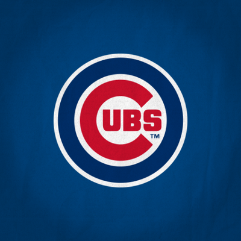

I love to travel all around the world. I love to travel becasue both of my parents work for United Airlines so I get to travel all around the world. I have been to
My other biggest interest has to be sports. I have loved sports since I was a young kid, I have always had a interest in playing even though
I wasn't very good. I have always loved to watch them as well as play them with my friends or on a minor league team. My favorite sport is baseball,
I have played since I could rememeber. My favorite positon was catcher because I got to be in every play. I also enjoy watching my favorite baseball team the
Chicago Cubs. My other favorite sport is Football that is american football. I was never good at playing football so I mainly just watched it with
my dad. My Favorite team is the Chicago Bears, I am hoping for a superbowl win this year.